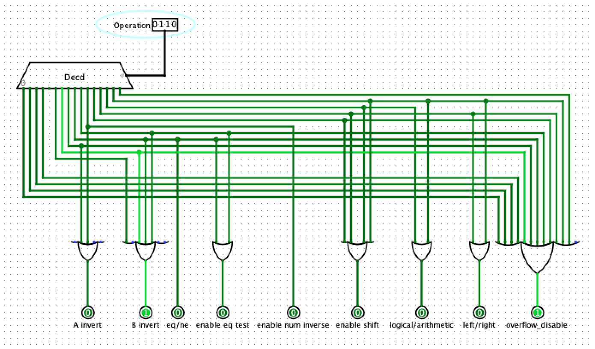
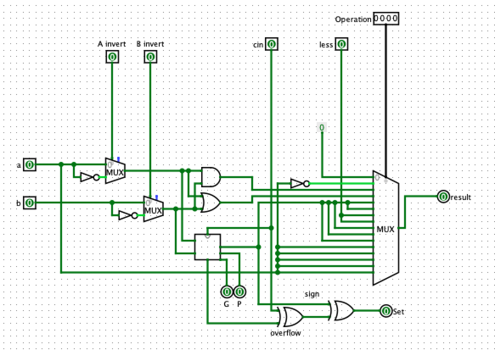
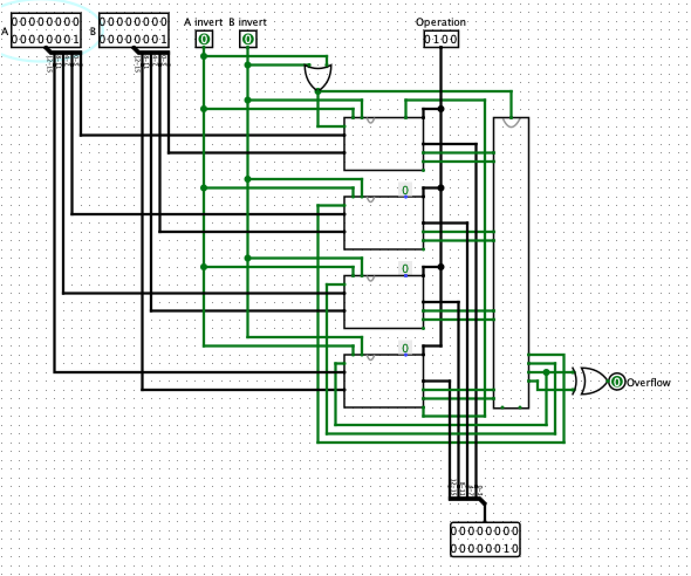
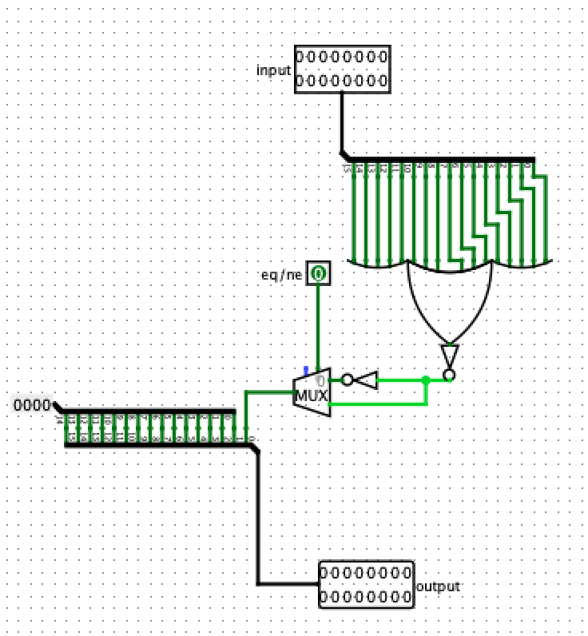
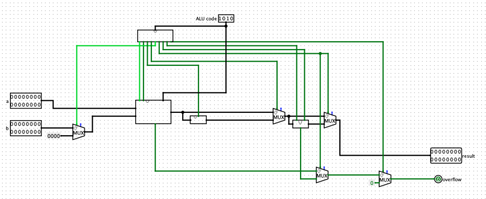
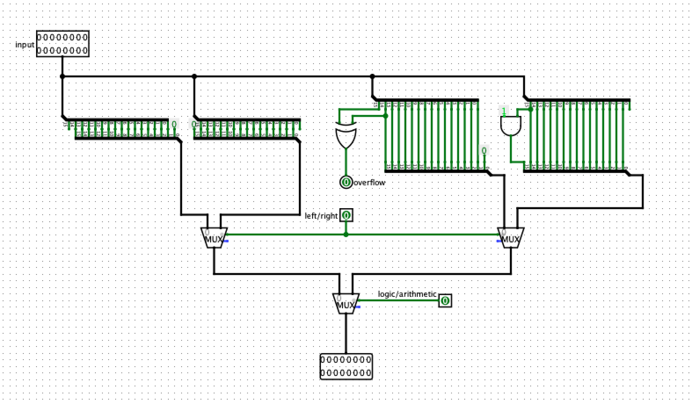
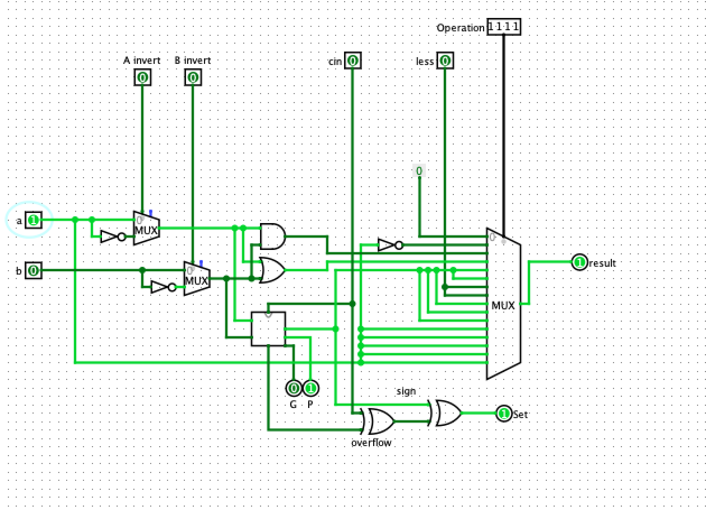

Titel: ALU
Dit verslag werd opgesteld door:
De oplossing bestaat uit de volgende bestanden (geef alle bestanden op):
In the following picture you can see the ALU Operation logic, it decodes the ALU signals into a number of outputs that configure the ALU and its functions. In this way we can easily decide if we want to enable or disable things like overflow, inversions of A or B, whether we wish to make use of other components like logical and arithmetic shifts etc.
The multiplexor allows us to simply output 0 within our 1-bit ALU.
The multiplexor allows us to output the inverted value as can be seen in the previous picture. We simply bypass all the arithmetic and logic and invert.
Again straightforward, using an AND gate and using the multiplexor to output.
Again straightforward, using an OR gate and using the multiplexor to output.
Again straightforward, using and using the multiplexor to output the result from the 1-bit adder, which is part of the carry lookahead adder which outputs the desired result.
Exactly the same as add, but if you have a look at the wiring within the ALU Operation Logic unit, you will find that B gets inverted in order to obtain subtraction.
If you take a look at the 1-bit ALU, you will notice the SET and LESS pins. By inverting B we subtract it A from B. By connecting the SET pin from the least significant bit to the LESS pin from the most significant bit, we get 0000 0000 0000 0001 when A indeed less than B
Exactly the same reasoning as greater than, but we invert A instead.
By connecting the output of A-B to the neq/eq component as seen below, we check if all bits are 0 after the subtraction. If they are, then A and B were equal.
Idem as the previous one, but using the multiplexor to invert the answer.
We simply set B to 0 and invert A using a not gate.
For this we make use of the shift component, again by using the ALU Operation logic we can choose between logical, arithmetic, left and right. The component for the logical shifts should be self explanatory. For the arithmetic shifts we're keeping track of overflow for SLA and make sure to copy 1 for SRA if LSB is 1.
As can be seen in the picture below, the multiplexor in the 1 bit ALU simply outputs the value of A, leaving everyhting unchanged.
